Este documento se plantea como una síntesis del trabajo práctico elaborado para la materia Series Temporales dictada por el Dr. Marcelo Risk, en el marco de la Maestría de Explotación de Datos y Descubrimiento del Conocimiento de la UBA, titulado “Ciclos de crecimiento económico. Un estudio comparativo de la Argentina y el Reino Unido a partir del análisis de señales”. Fue realizado junto al Lic. Sebastián Frittaoni.
El presente trabajo se plantea como objetivo caracterizar la evolución a lo largo del tiempo del PBI per cápita de Argentina y el Reino Unido, para el período 1875-2010 . En particular, se empleará la metodología del análisis de señales, tanto en el dominio del tiempo como en el dominio de la frecuencia, a partir de la trans-formación de la señal original mediante la transformada de Fourier, el filtrado mediante medias móviles, y el análisis de tiempo-frecuencia mediante la transformación de wavelets.
La elección de ambos países estuvo dada por la estrecha relación económica, que tuvo su apogeo entre la segunda mitad del siglo XIX y la primera mitad del XX. Desde los ponchos fabricados en Manchester hasta el pacto Roca-Runciman, estas naciones experimentaron un intercambio comercial intenso, provechoso por igual a veces, pero en muchas ocasiones denunciado por perjudicial para nuestro país. Esperamos, por otro lado, encontrar comportamientos disímiles por cuanto ambas economías son estructuralmente diferentes: una, cuna del capitalismo industrial y potencia hegemónica hasta principios del siglo XX y la otra, focalizada en la exportación de recursos naturales, en particular, de origen agrícola, característica que, pese a intentos en sentido contrario, nunca dejó de primar.
En la mayoría de las escuelas de teoría económica, sin importar su orientación, persiste el concepto de ciclo económico, como componente endógeno del capitalismo. Un primer acercamiento que podemos hacer es a partir del entrepreneur schumpeteriano, como aquel empresario que introduce innovaciones en el proceso productivo con el afan de obtener ganancias por fuera del circuito de acumulación, lo que explica la inestabilidad del capitalismo industrial. Este impulso hacia el avance tecnológico del emprendedor (la tan mentada destrucción creativa) es teorizado como innovación, en el que la acción del primer empresario es seguida por un enjambre de imitadores. Los ciclos económicos aparecen, entonces, como corolario de este fenómeno, en la forma de fluctuaciones recurrentes de la tasa en la cual las innovaciones son introducidas en la economía. Partiendo de este marco, nos concentramos en analizar 4 ciclos económicos distintivos, que difieren en su duración y en sus características:
Ciclos de Kitchin: duran entre 3 y 5 años. Se producen por ajustes de inventarios a partir del mayor o menor uso de la capacidad instalada.
Ciclos de Juglar: duran entre 7 y 11 años. Se producen por cambios en la inversión de capital fijo.
Ciclos de Kuznets: duran entre 15 y 25 años. Se producen por movimientos demográficos e inversión en infraestructura.
Ciclos de Kondratiev: duran alrededor de 50 años. Se producen por cambios significativos a nivel tecnológico.
Para el caso particular de la Argentina, diversos autores como Diamand y Braun señalan la existencia, a partir de mediados de siglo XX hasta mediados de 1970, de un comportamiento cíclico denominado “stop and go”. En este sentido, en la Argentina, a partir de la crisis de 1930 del sistema capitalista en general, y por ende del modelo agroexportador imperante en el país, se llevó a cabo un proceso de industrialización centrado en un primer momento en bienes de consumo no durables que ya no podían ser importados, debido a la caída del comercio internacional. Esto produce el surgimiento de una estructura productiva desequilibrada, que consta de:
un sector agropecuario con mayor productividad relativa, competitivo a nivel internacional y por lo tanto generador de divisas
un sector industrial con menor productividad relativa, no competitivo a nivel internacional y consumidor neto de divisas
Esta característica propia de la industrialización argentina genera una dinámica de crecimiento trabado, produciendo un comportamiento cíclico de aproximadamente 4 años de la economía argentina, dividido en una etapa ascendente (go) y una etapa descendente (stop).
En la primera etapa hay expansión de la actividad económica, con crecimiento de la producción industrial y del consumo, a partir del aumento de los salarios reales.
En cierto momento, a partir de un aumento de las importaciones, por el crecimiento de la actividad industrial no acompañado por un incremento en los montos exportables, se produce una crisis de la balanza de pagos que se expresa, a su vez, en una caída de las reservas del Banco Central. En este punto, se lleva a cabo una devaluación de la moneda que tiene efectos inflacionarios, contractivos en cuanto a la actividad y regresivos con respecto a la distribución del ingreso.
La fase descendente comienza con una variación en el tipo de cambio. Por esta razón, aumenta el precio de los productos agropecuarios, al obtener mayor cantidad de pesos en el comercio internacional, y los productos industriales se encarecen por el encarecimiento de los insumos importados. Por lo tanto, se produce un descenso en los salarios reales, originando una transferencia de ingresos al sector exportador. Finalmente, la caída de la demanda agregada ocasiona una caída en la producción industrial y, por ende, en el nivel de las importaciones. Con el consiguiente aumento de divisas, la economía está en condiciones de empezar un nuevo ciclo.
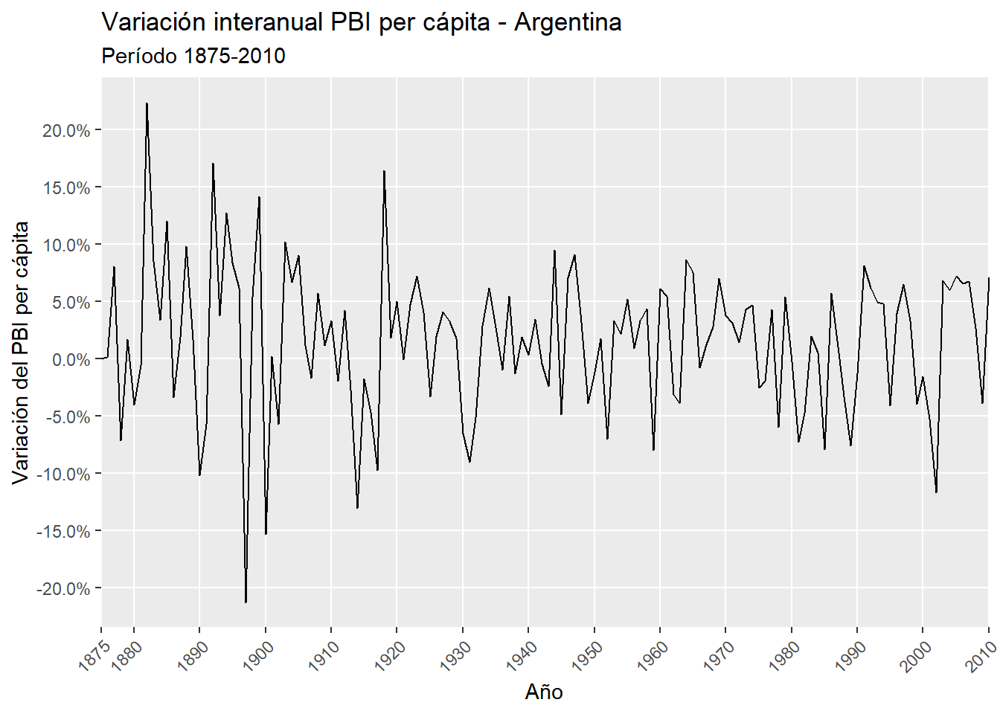
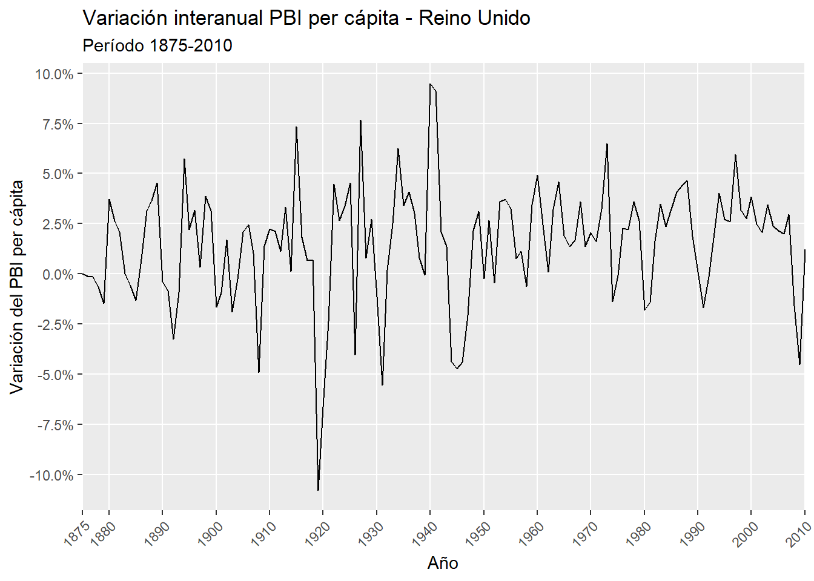
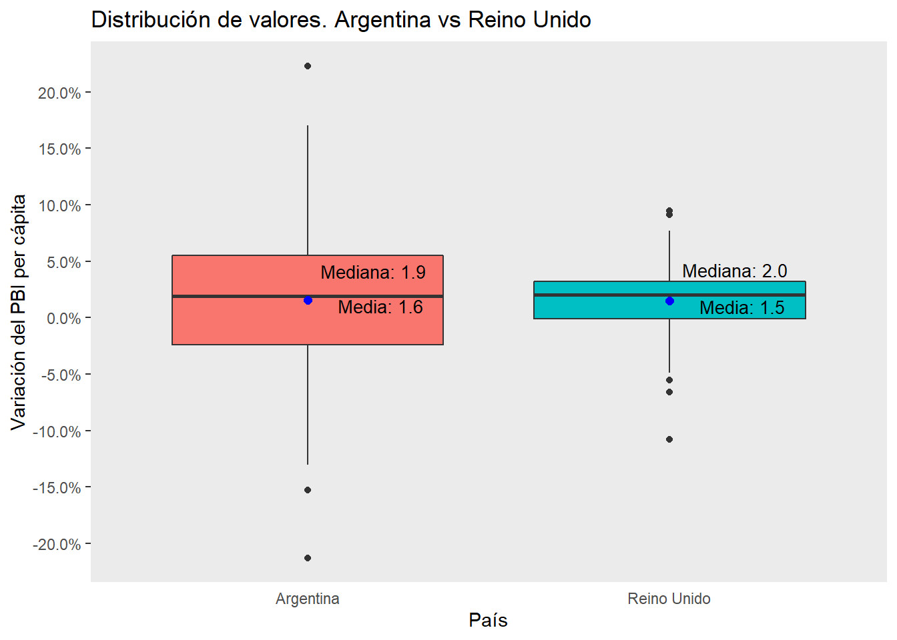
| Fase | Cantidad | Duración promedio (años) | Pico promedio (%) | Duración máxima (años) | Pico máximo (%) |
|---|---|---|---|---|---|
| Expansión | 31 | 2,81 | 7,40 | 8 | 22,32 |
| Recesión | 30 | 1,63 | 6,01 | 5 | 21,28 |
| Recesión (depresión) | 8 | 2,75 | 11,92 | 5 | 21,28 |
| Fase | Cantidad | Duración promedio (años) | Pico promedio (%) | Duración máxima (años) | Pico máximo (%) |
|---|---|---|---|---|---|
| Expansión | 18 | 5,44 | 4,71 | 15 | 9,48 |
| Recesión | 18 | 2,11 | 2,80 | 5 | 10,79 |
| Recesión (depresión) | 4 | 4,00 | 5,05 | 5 | 10,79 |
A priori, podemos distinguir algunas diferencias entre ambas series temporales. El primer dato que llama la atención es el promedio de crecimiento, levemente mayor en caso argentino frente al británico (1,6% vs 1,5%). Esta aparente inconsistencia respecto a lo que se esperaría encontrar en una economía subdesarrollada versus una desarrollada es explicada si contemplamos la existencia de una fuerte dispersión de los datos, alrededor del doble en el primer caso frente al segundo (desvío estándar de 6,3% vs. 3%). Así, mientras que el 50% central de la distribución de valores de la serie del Reino Unido se ubica en valores positivos (0 a 3,2%), en el caso argentino incluye también valores negativos (-2,4% a 5,5%). Asimismo, la mediana británica es levemente superior a su contraparte argentina: 2% vs 1,9%. La amplitud de valores implica, además, la existencia de outliers mucho más pronunciados en el caso argentino (rango de 22,3% a -21,3% vs 9,5% a -10,8%). Podemos, por otro lado, realizar un análisis de las fases de expansión (períodos de crecimiento del PBI) y recesión (períodos de caída del PBI) por las que pasaron ambas economías. Tanto los períodos expansivos como recesivos parecen ser más cortos e intensos en el caso argentino, y más largos y matizados en el británico. En el caso británico, el período de mayor prosperidad se ubicó entre 1959 y 1973, lo que está asociado a la edad dorada del capitalismo de posguerra, mientras que la mayor recesión se ubicó entre 1875 y 1879, asociada a la Gran Depresión de 1873. Si nos concentramos en particular en las depresiones económicas, entendidas como un tipo de recesión que se extiende al menos durante 3 años o con una caída del 10% del PBI, encontramos dos puntos destacados: alrededor de 1919 con el fin de la Primera Guerra Mundial y en 1944-1947 con el fin de la Segunda Guerra Mundial. El caso argentino encuentra un correlato de prosperidad en el británico: el período más sostenido de crecimiento se dio en 1967-1974 . La crisis más larga se dio en el marco de la Primera Guerra Mundial, aunque de manera anticipada a RU, por efecto del incremento de las tasas de interés y una mala cosecha. La depresión más intensa se dio alrededor de 1897-1900 por una crisis de la balanza de pagos. Cabe destacar que las depresiones siguen un patrón similar respecto al caso británico que las recesiones: son un poco más cortas pero mucho más intensas (caídas promedio de -12% frente a -5%). Como dato adicional, destacamos que el crecimiento total de las series muestra, para el caso argentino, un incremento de 527%, mientras que para el británico uno de 592%. En este sentido, las diferencias de PBI per cápita ya existentes al principio del período para Reino Unido-Argentina (U$S1.400 vs U$S1.600, o 2,1 veces) se agudizan al final (U$S23.800 vs U$S10.300, o 2,3 veces).
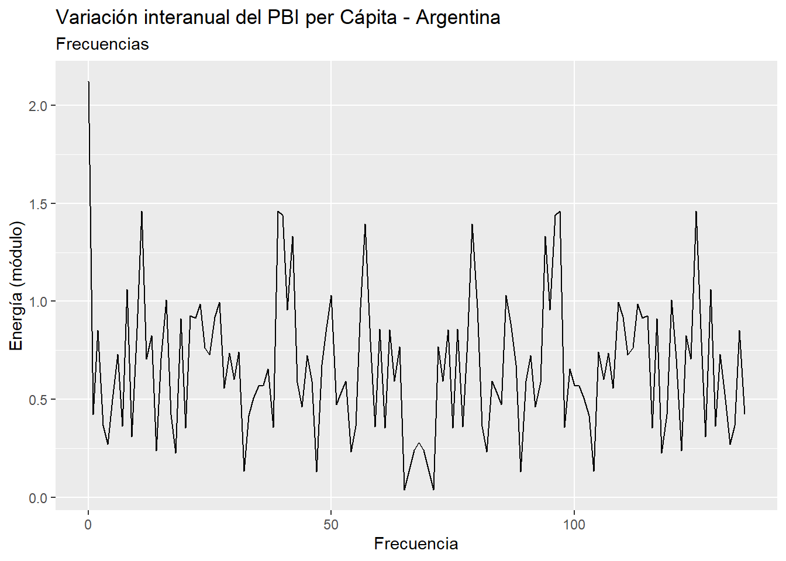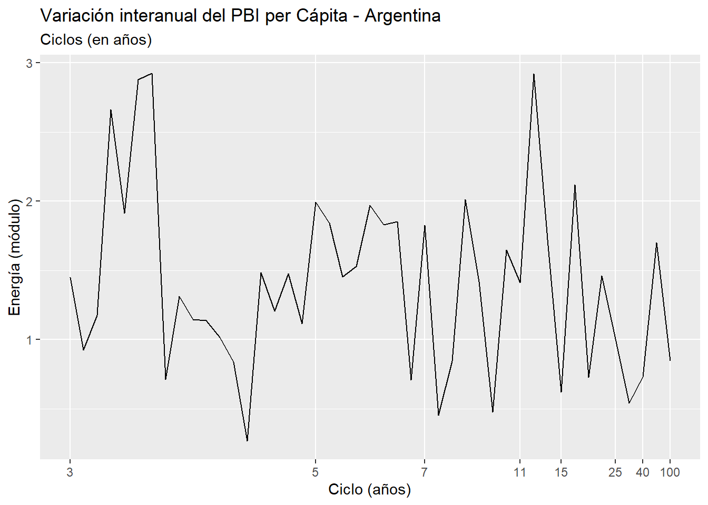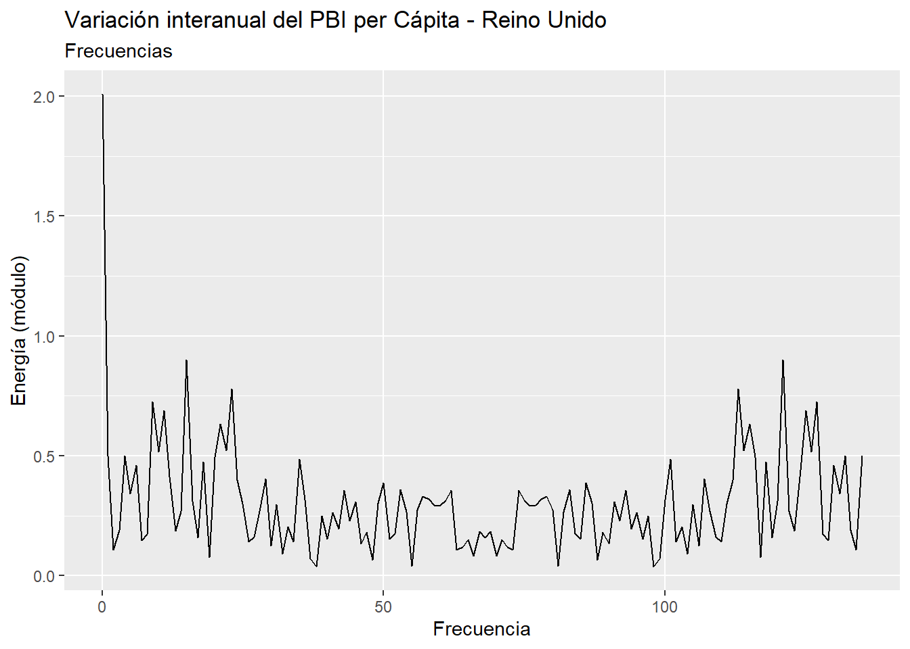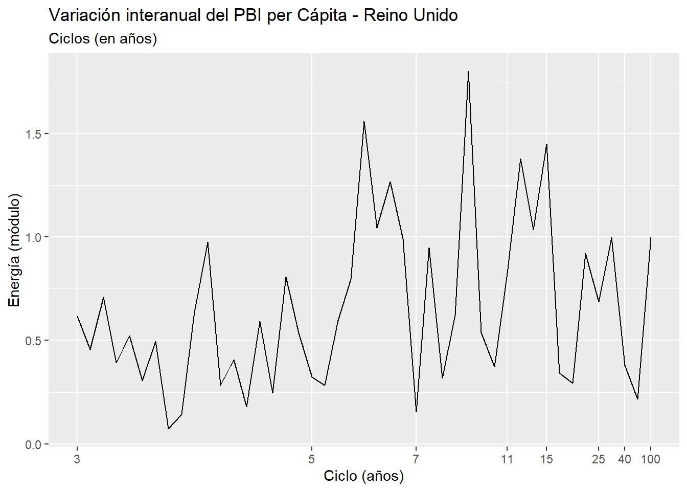
| Argentina | Reino Unido |
|---|---|
| 0,58 | 0,15 |
| Ciclo | Argentina | Reino Unido | Diferencia |
|---|---|---|---|
| 1 - Kitchin (3-5) | 29,0 | 12,1 | -16,9 |
| 2 - Int (5-7) | 14,6 | 18,1 | 3,5 |
| 3 - Juglar (7-11) | 8,4 | 12,7 | 4,3 |
| 4 - Int (11-15) | 8,6 | 9,1 | 0,5 |
| 5 - Kuznets (15-25) | 4,8 | 7,9 | 3,1 |
| 6 - Int (25-40) | 0,8 | 3,7 | 2,9 |
| 7 - Kondratiev (40-70) | 2,2 | 0,5 | -1,7 |
| Promedio (Freq 0) | 5,7 | 20,1 | 14,4 |
| Ruido | 25,9 | 15,9 | -10,0 |
Un análisis típico en el procesamiento de señales consiste en efectuar la Transformada de Fourier, para convertir una señal originada en el dominio del tiempo al dominio de la frecuencia. En nuestro análisis del caso argentino podemos apreciar una predominancia de las frecuencias altas, lo que es coherente con una mayor dispersión en los datos y la mayor cantidad de fases de expansión y recesión del PBI. Descontando la frecuencia 0, que nos hablaría del promedio de la serie, y las frecuencias muy altas, asociadas al ruido, podemos apreciar que las frecuencias aisladas más elevadas se encuentran en el terreno de los ciclos de Kitchin (3-5 años) y de stop and go y en un período -no teorizado- de los 11-15 años (intermedio entre Juglar y Kuznets). El caso británico, por su parte, muestra una predominancia de frecuencias más bajas, correspondientes a ciclos más largos. En particular, encontramos las mayores frecuencias en los ciclos de Juglar (7-11 años), seguidas por el período anterior de 5-7 años. Por otro lado, podemos sumar la proporción de la energía captada por cada uno de los tipos de ciclos económicos. Las conclusiones son similares al análisis anterior: en el caso argentino la mayor proporción de la energía esaptada por los ciclos de Kitchin, mientras que en el británico el ciclo siguiente, de 5 a 7 años es el más destacado. Finalmente, cabe destacar que la energía total de ambas series difiere notablemente, lo que va en línea con el comportamiento más errático de la serie argentina (0,58 vs 0,15).
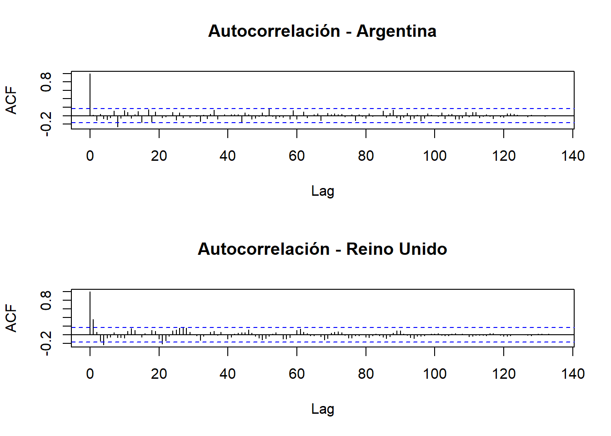 En el análisis de autocorrelación de Argentina, observamos un solo lag significativo (negativo) igual a 8. Encontramos regularidades en el resto de los lags, lo que nos hablaría de la mayor aleatoriedad de la serie. La serie del Reino Unido muestra, por el contrario, un lag significativo predominante en 1, lo que nos hablaría de una mayor regularidad en la serie, y una serie de lags que, si bien no significativos, describen una forma sinusoidal, que podemos asociar a ciclos intermedios más claros.
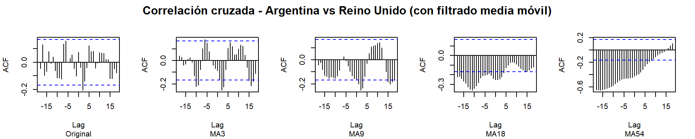
Parecería, a priori, haber un desfasaje entre los ciclos económicos de ambas economías, en tanto la correlación cruzada de las series es significativa de forma negativa con un lag de 2 (la economía argentina cae 2 años después de que la británica suba, por ejemplo). Este comportamiento se verifica incluso con mayor intensidad al comparar los ciclos de distinta extensión, y es más notoria en los ciclos largos. Si bien nuestra hipótesis inicial de estrecha interrelación entre ambos países se ve debilitada, es por otro lado una consecuencia esperable de la disímil inserción de su economía mundial, y su dependencia variable de los ciclos mundiales económicos.
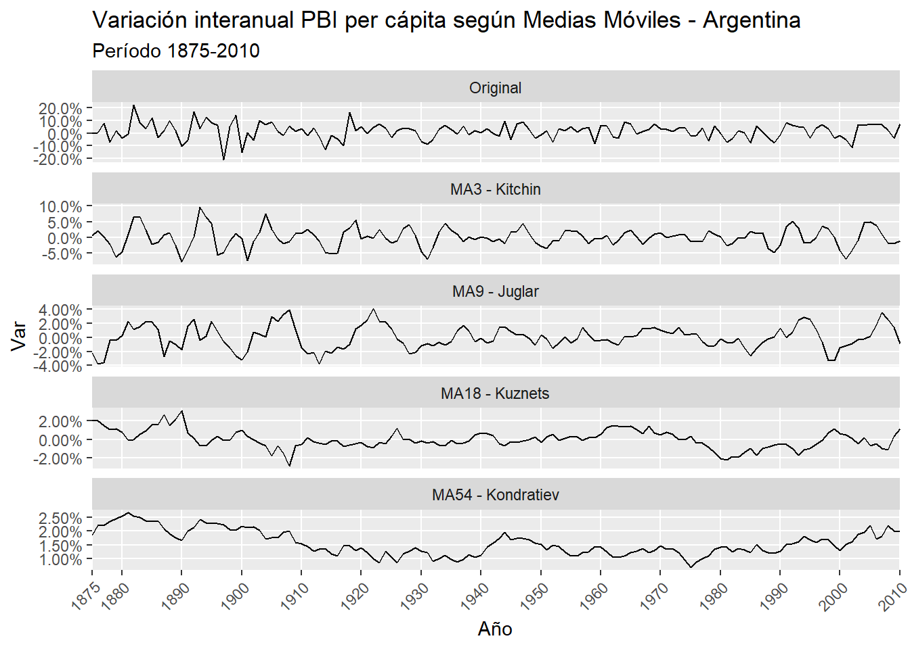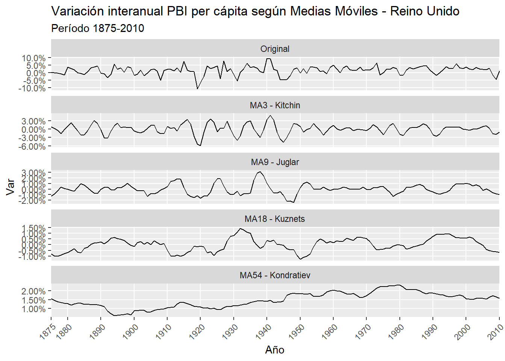
Dada la imposibilidad de aislar el componente estacional de las series (por tener una frecuencia anual), optamos por descomponer las series por medias móviles, para poder apreciar la evolución de cada tipo de ciclo económico a lo largo del tiempo. Para el caso argentino, apreciamos ciclos de Kitchin y Juglar más marcados para el período 1875-1930, y más sosegados para los 60 años siguientes. Esto iría a contramarcha de la teoría del Stop And Go ya reseñada, pero en línea con nuestro análisis de tiempo-frecuencia. La serie británica, por su parte, acusa recibo de período tumultuoso entre ambas guerras mundiales, con ciclos cortos e intermedios más destacados. Es interesante destacar el efecto de la tendencia para ambos países (ciclos de Kondratiev): mientras que el caso argentino comienza y termina con números elevados, con una leve ondulación en el medio, el caso británico muestra un crecimiento constante a lo largo de casi todo el siglo XX, con una suave caída a partir de la década del ‘80.
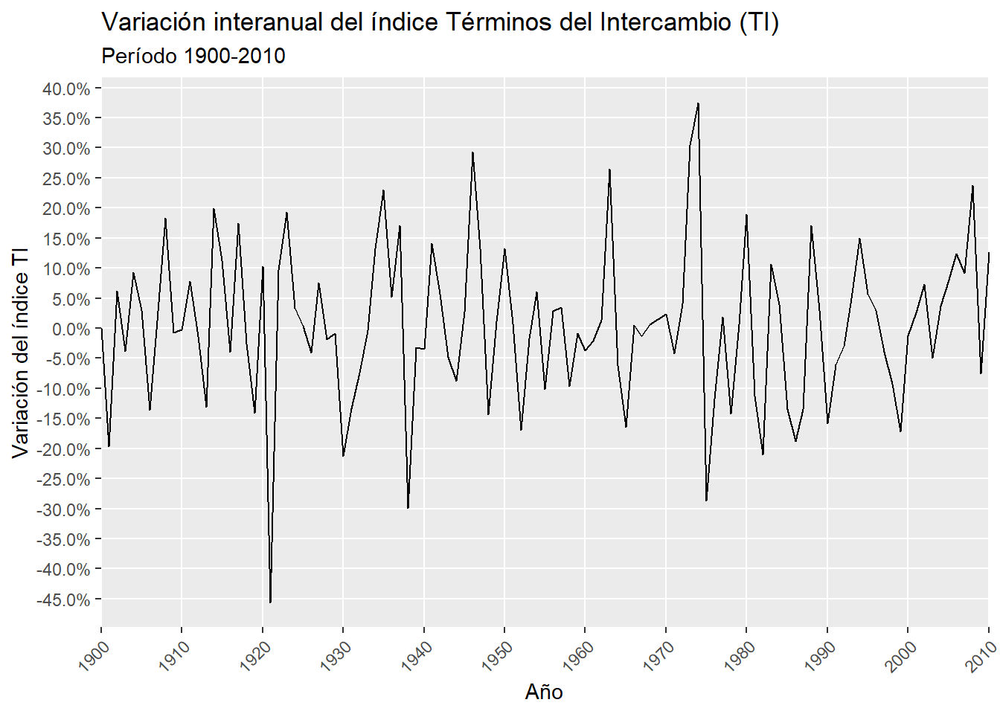
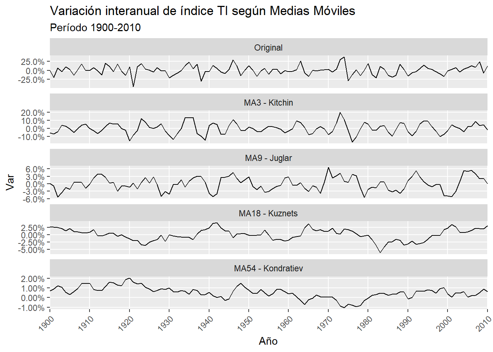
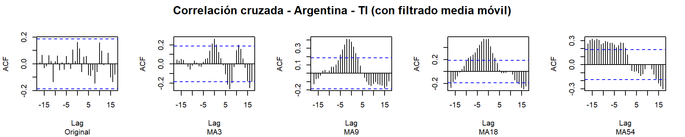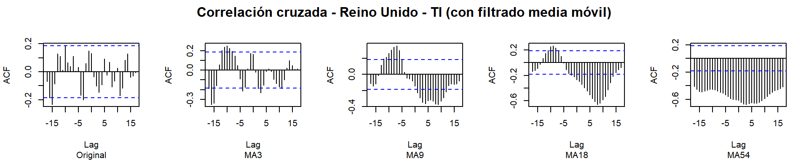
Un análisis que consideramos puede ser fructífero es la comparación de la evolución de ambos países frente al índice de Términos del Intercambio (TI). Esto tiene sentido por cuanto la economía de los países subdesarrollados, y en particular de Argentina, ha estado basada durante gran parte del período analizado en la exportación de productos primarios, mientras que la de los países desarrollados, en particular Reino Unido, reposó sobre los productos industriales. El índice TI utilizado se basa en el ampliamente reconocido trabajo de Grilli y Yang (1988). El índice está compuesto de la siguiente manera: GYCPI/MUV, siendo GYCPI un índice agregado de precios de commodities (sin tener en cuenta el petróleo), y MUV un índice de los valores de las exportaciones de un conjunto de países industrializados. Vale decir, entonces, a mayor índice TI, mayor valor relativo de las commodities frente a los productos industriales. Sin entrar en un análisis pormenorizado de la serie, se aprecia un rango de movimientos mucho más amplio que en los países estudiados (entre -45% y 37%). El período de entreguerras (1920-1940) muestra oscilaciones muy abruptas, al igual que los años intermedios de la década del ‘70, probablemente como efecto colateral de la crisis del petróleo. Por otro lado, podemos corroborar la apreciación de Grilli y Yang respecto de la tendencia decreciente de los términos del intercambio en las primeras 8 décadas del siglo XX, tendencia, que, por otro lado, muestra claros signos de revertirse en la primera década del siglo XXI. Nos parece pertinente analizar la correlación cruzada entre las series de ambos países respecto al índice TI. Al comparar las series originales, prácticamente no surgen lags con una correlación significativa. Sin embargo, al comparar las series suavizadas por los filtros MA, aparecen correlaciones fuertes alrededor del lag 0: positivas para Argentina (en particular para los ciclos medios de 9 y 18 años), y negativas para Reino Unido (en particular para los ciclos medios-largos y largos). Esto se condice con la posición de ambos países en la economía mundial respecto a su condición de exportadores de productos primarios o industriales.